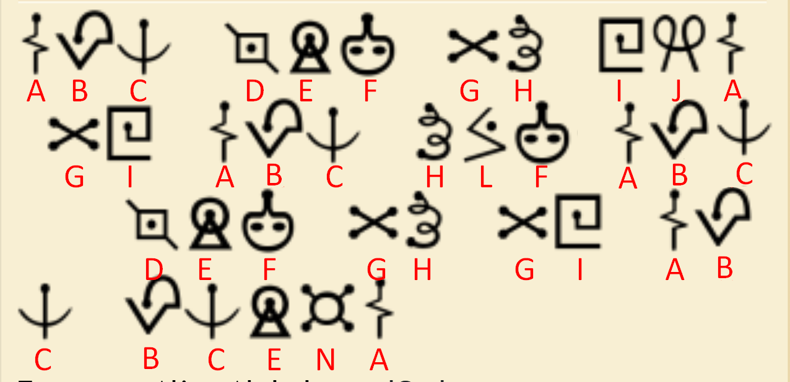
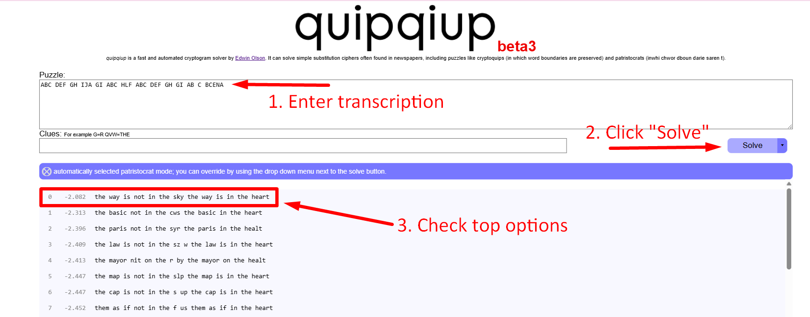
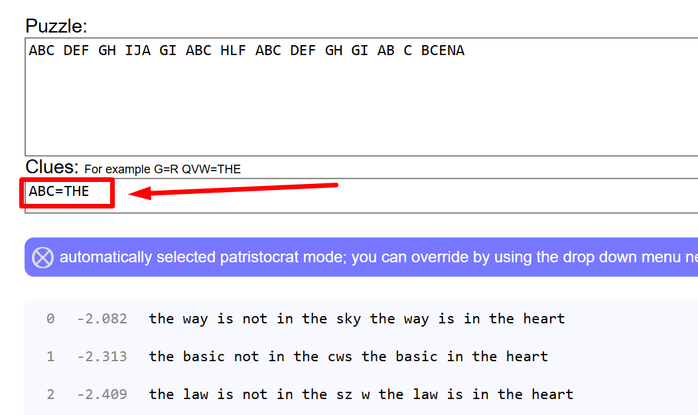
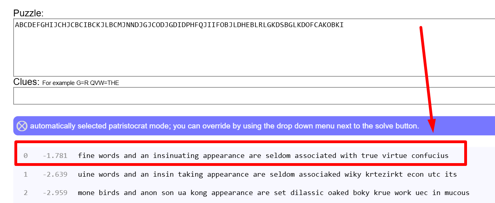

How to Transcribe and Solve Symbol Ciphers
Transcribing Symbols to Letters
Assign each symbol a unique letter placeholder. Keep track of your assignments. The transcription for this example is:
"ABC DEF GH IJA GI ABC HLF ABC DEF GH GI AB C BCENA"

Entering Your Transcription in Quipqiup
Copy your transcription (using letter placeholders) and paste it into Quipqiup. The "Dictionary" option in the arrow by the "Solve" button is the best option if your transcription has spaces
Quipqiup will attempt to automatically decode your cipher. Adjust its hints or assumptions if necessary and review the top solutions for readability and logic. Bad decryptions will not make sense.

Improving Your Results
If results are unclear, add known letters or words to "Clues" in Quipqiup. Re-run to refine the solution. Errors in the results may be due to errors in the transcription

Additional Help
If Quipqiup struggles, consider manually substituting or identifying the symbol cipher so you don't need to substitute manually
Can I only transcribe and substitute symbol ciphers?
No, you can do this for any substitution cipher, for example if I transcribe each bigram in this hexadecimal: 62 77 63 69 61 67 68 70 6c 6b 63 70 6b 63 77 63 6c 77 63 7a 6b 73 77 63 6f 6b 64 64 69 6b 68 6b 63 75 69 6b 68 69 6c 69 6a 70 67 71 6b 6c 6c 67 75 77 6b 73 69 70 61 77 73 78 73 68 7a 69 79 77 68 73 7a 69 75 67 63 62 7a 75 77 7a 6c
Trnscription:
ABCDEFGHIJCHJCBCIBCKJLBCMJNNDJGJCODJGDIDPHFQJIIFOBJLDHEBLRLGKDSBGLKDOFCAKOBKI
